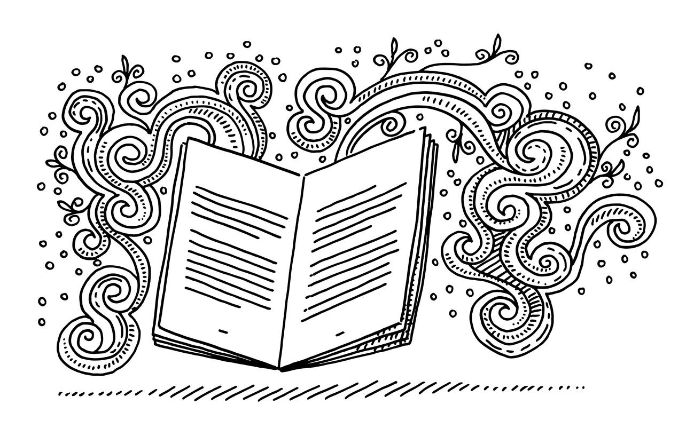

tags: cultural evolution, democracy, humanism, religion, science, written word
5 min read

Religion can be thought of as a collection of shared cultural artifacts that provide a sense of meaning about human existence.
Religion attempts to answer “big” questions such as the following:
Why are we here?
What is our relationship to the world around us?
How are we related to one another?
Religious expression can manifest itself in several different ways.
In oral traditions, religion would be expressed as a shared set of stories that would be passed down from one generation to another, and would evolve over time.
Modern, organized religions differ from oral religions in three significant ways.
The stories are written down instead of being communicated orally.
The storyteller has become invisible. While the role of the storyteller is always apparent for oral stories, the identities and circumstances of those who originally set words to paper – or who later selected and edited those words – are often obscured in organized religions, giving readers the impression that the written stories somehow came directly from, or were authorized by, a single, divine source.
With the advent of scientific beliefs and texts, the idea of a rigid, unalterable truth has crept into religious texts as well.
In organized religions, the effect of all three of the above differences has been to cause our shared stories to become calcified: instead of a fluid, evolving collection of stories, with expected variation from one storyteller to another, and with the ability to experience the stories directly, and interpret them personally, a written collection of stories is now accepted as “gospel”: something that is rigid and unchanging, and whose significance is not to be questioned.
Note that this change is unfavorable, and is arguably an unintended consequence of the advent of the written word and the appearance of legitimate scientific beliefs. This change is unfavorable in at least three ways:
the stories are not allowed to evolve to meet changing human conditions;
later generations are not allowed to fully participate in the role of storyteller;
opportunity is provided for those in power to alter the stories to suit their own ends.
If religion was originally a shared set of stories that provided a sense of meaning about human existence, and if modern organized religion represents a somewhat unfortunate and largely unintended calcification of some of these stories into a rigid “gospel,” then may we not think of art as a different, and perhaps even superior, sort of religion?
That is, if certain paintings, poems, music, novels and films seem to speak to the meaning of human existence – and do so, frankly, in a richer, deeper, and more contemporary manner than the gospels of organized religions – then may we not legitimately refer to appreciation of these works of art as a form of religious feeling?
Note that such a conception of religious feeling does nothing to devalue traditional religious texts, but simply allows us to appreciate them in a different context.
Considered in this way, art becomes more than mere ornament, but can be seen as a foundational element of human existence.
Novelist Kurt Vonnegut described his revelations on this topic in a 1974 interview:
It's only recently that I've come to understand that writers are not marginal to our society, that they, in fact, do all our thinking for us, that we are writing myths and our myths are believed, and that old myths are believed until someone writes a new one.
…
I think writers should be more responsible than they are, as we've imagined for a long time that it really doesn't matter what we say. . . . I think it's a beginning for authors to acknowledge that they are myth-makers and that if they are widely read, will have an influence that will last for many years – I don't think that there's a strong awareness of that now, and we have such a young culture that there is an opportunity to contribute wonderful new myths to it, which will be accepted.
The stories we tell ourselves give shape and meaning to our lives. This is true whether the stories are passed along through personal interactions, family traditions, religious texts, novels, short stories, poetry, songs, plays, film, sculpture, painting or any other form of artistic expression.
This may be one reason why Henry Miller railed, in Big Sur and the Oranges of Hieronymus Bosch:
Men are not suffering from the lack of good literature, good art, good theatre, good music, but from that which has made it impossible for these to become manifest. In short, they are suffering from the silent, shameful conspiracy (the more shameful since it is unacknowledged) which has bound them together as enemies of art and artist. They are suffering from the fact that art is not the primary moving force in their lives. They are suffering from the act, repeated daily, of keeping up the pretense that they can go their way, lead their lives, without art.
Miller speaks frankly about art with the unbridled passion and depth of conviction usually reserved for fundamentalists speaking about their religions.
But if certain works of art help to shape our lives and give meaning to them – as many certainly have for me – then does it not make sense to speak of them with this same depth of feeling usually reserved for religious texts?
One advantage of this form of religious feeling, of course, is that we know who the artists are, and know they are fallible humans, just like us. What's more, I can speak to you about my favorite works of art, and tell you why they are so meaningful to me, without any danger that I will condemn you if you find other works more moving than my favorites. And so my form of worship is to tell you in some detail about the works of art I find most moving, and to attempt to describe why they affect me so deeply.